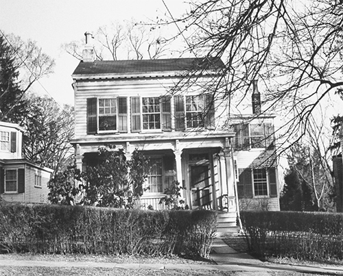

Nhà số 112 phố Mercer
Con tàu viễn dương Westmoreland chở Einstein, lúc này 54 tuổi, đến nơi sẽ trở thành quê hương mới của ông; nó cập cảng New York vào ngày 17 tháng Mười năm 1933. Đợi gặp Einstein trong cơn mưa tại bến tàu Phố 23 là một ủy ban chính chức do bạn ông là Samuel Untermyer dẫn dắt, đó là một luật sư xuất chúng; ông này mang theo một số cây lan tự trồng cùng với một đội hoạt náo viên mà theo kế hoạch sẽ diễu hành cùng Einstein tới buổi lễ chào mừng.
Tuy nhiên, không ai thấy Einstein và những người đi cùng ông đâu cả. Abraham Flexner, Viện trưởng Viện Nghiên cứu Cao cấp, bị ám ảnh với việc phải che chắn cho ông trước sự chú ý của thiên hạ, bất kể sở thích khó đoán của Einstein là gì. Vì vậy, ông đã cử một tàu kéo, cùng hai ủy viên quản trị của Viện bí mật đưa Einstein đi khỏi tàu Westmoreland ngay khi tàu này hoàn tất thủ tục kiểm dịch. “Không đưa ra tuyên bố và không trả lời phỏng vấn về bất cứ chủ đề nào,” ông đánh điện. Nhắc lại thông điệp này một lần nữa, ông gửi thêm một lá thư cho một ủy viên quản trị đi đón Einstein cầm theo. Bức thư viết: “Sự an toàn của ông ở Mỹ phụ thuộc vào việc ông im lặng và tránh không tham dự các cuộc họp công khai.”
Cầm theo hộp đàn vĩ cầm, với đám tóc thò ra từ chiếc mũ đen rộng vành, Einstein lén rời sang tàu kéo, chiếc tàu này sau đó đưa ông cùng cả đoàn tới Battery, ở đó có một chiếc xe đang đợi sẵn để đưa họ về Princeton. Flexner nói với các phóng viên: “Tất cả những gì Tiến sỹ Einstein muốn là được yên ổn và tĩnh lặng.”
Thật ra, ông cũng muốn một tờ báo và một cây kem ốc quế. Vì vậy, ngay khi nhận phòng tại khách sạn Peacock ở Princeton, ông thay sang bộ đồ thường, tản bộ cùng chiếc tẩu thuốc tới quầy sách báo, ở đây ông mua một tờ báo buổi chiều và phì cười trước những tít báo về hành tung bí ẩn của mình. Sau đó, ông tới một tiệm kem, tiệm Baltimore, chỉ tay vào cây kem ốc quế mà một sinh viên khoa thần học vừa mua, rồi sau đó chỉ vào mình. Khi người phục vụ thối tiền lẻ, cô thốt lên: “Tôi sẽ ghi chuyện này vào sổ lưu niệm của mình.”
Einstein được phân cho một phòng làm việc nằm trong góc ở khu hội trường của đại học, nơi đây hiện được dùng làm trụ sở tạm thời của Viện. Tại thời điểm đó, có 18 học giả đang lưu tại đây, bao gồm nhà toán học Oswald Veblen (cháu của nhà lý luận xã hội Thorstein Veblen) và John von Neumann187, một người tiên phong về thuyết vi tính. Khi được đưa đi xem văn phòng của mình, ông được hỏi cần những trang thiết bị gì. Ông trả lời: “Một chiếc bàn to nhỏ gì cũng được, một chiếc ghế, giấy và bút chì. À, đúng rồi và cả một sọt rác lớn nữa, để tôi có thể bỏ đi các bản lỗi.”
Ông và Elsa sớm thuê được một ngôi nhà, họ tổ chức một bữa tiệc mừng bằng một buổi biểu diễn âm nhạc nho nhỏ với các tác phẩm của Haydn và Mozart. Nghệ sĩ vĩ cầm nổi tiếng người Nga, Toscha Seidel, chơi chính, còn Einstein họa theo. Để đền đáp cho một số ngón chơi vĩ cầm mà Seidel chỉ cho mình, Einstein cố gắng giải thích thuyết tương đối cho Seidel và vẽ cho ông một số bức tranh phác họa hiện tượng những thanh đo chuyển động bị co ngắn lại.
Kể từ đây, thành phố bắt đầu râm ran những câu chuyện về tình yêu âm nhạc của Einstein. Chẳng hạn có một câu chuyện kể lại rằng Einstein chơi trong một nhóm tứ tấu có nghệ sĩ bậc thầy Fritz Kreisler. Có lúc, họ bị lạc nhịp. Kreisler ngừng lại và quay sang Einstein chế giễu. “Có chuyện gì vậy, Giáo sư? Ông không biết đếm sao?” Gây bất ngờ hơn là chuyện một tối nọ khi một nhóm tín đồ Cơ Đốc giáo tập trung cầu nguyện cho những người Do Thái bị ngược đãi, Einstein đã khiến họ ngạc nhiên khi hỏi liệu ông có thể đến buổi cầu nguyện của họ không. Ông mang theo cây đàn vĩ cầm, và chơi một bản solo như thể xưng cầu.
Nhiều màn trình diễn của ông đơn thuần là do ngẫu hứng. Trong lễ Halloween đầu tiên ở đó, ông đã khiến những cô nhóc đi xin kẹo Halloween phải ngẩn ngơ, khi đó các cô bé 12 tuổi này định đến bày trò đùa nghịch, nhưng ông đã xuất hiện ở cửa, đàn cho các em nghe một bản dạ khúc. Vào lễ Giáng sinh, khi các thành viên của Giáo hội Trưởng lão Đệ nhất đến hát thánh ca trước sân nhà, ông bước ra khoảnh sân đầy tuyết, mượn cây vĩ cầm từ một phụ nữ trong số đó và chơi cùng họ. “Ông ấy quả là một người đáng mến,” một người trong họ nhớ lại.
Einstein sớm tạo được hình ảnh gần như một huyền thoại dựa trên thực tế về ông, đó là hình ảnh về một vị giáo sư nhân từ và nhẹ nhàng, đôi khi lơ đễnh nhưng lúc nào cũng ngọt ngào, một người hay mải mê chìm trong suy tư, thường giúp đỡ các em nhỏ làm bài tập về nhà và hiếm khi chải đầu hay đi tất. Vốn tự ý thức được về bản thân, ông cũng chủ động góp phần vào những cảm nhận đó. Ông nói đùa: “Tôi là một nhân vật cổ xưa được biết đến chủ yếu vì việc không đi tất và được đẩy vào những dịp đặc biệt để đáp ứng sự hiếu kỳ.” Vẻ ngoài đầu bù tóc rối phần nào khẳng định cho sự bình dị và hành động có phần nổi loạn của ông. Ông từng bảo với một người hàng xóm: “Tôi đã đến cái tuổi mà nếu ai đó bảo tôi phải đi tất, tôi sẽ không làm.”
Bộ quần áo rộng thùng thình, thoải mái trở thành biểu tượng cho sự thực thà, không cố công tỏ vẻ nơi ông. Ông có một chiếc áo khoác da mà ông thường mặc tới cả sự kiện trang trọng lẫn không trang trọng. Khi một người bạn phát hiện rằng ông bị dị ứng nhẹ với áo len, bà quyết định tới một tiệm bán đồ thừa và mua cho ông vài chiếc áo lạnh chất cotton mà sau này ông mặc luôn. Tính tùy tiện của ông đối với việc cắt và chải tóc có sức lây lan mạnh đến mức cả Elsa, Margot và Maja – em gái ông, tất cả đều có cùng kiểu tóc tai bù xù màu muối tiêu.
Ông khiến hình ảnh thiên tài luộm thuộm của mình nổi tiếng như Chaplin đã làm với nhân vật Gã lang thang. Ông tốt bụng nhưng xa cách, thông minh nhưng thường hay lúng túng. Ông lang thang khắp nơi với dáng vẻ lơ đễnh và sự giễu nhại hài hước. Ông thật thà nhận lỗi, đôi khi không ngây thơ như vẻ ngoài, quan tâm nhiệt thành đến nhân loại và dân tộc. Ông sẽ chăm chăm dõi vào những chân lý của vũ trụ và những vấn đề toàn cầu, chúng cho phép ông nhiều lúc dường như rời khỏi thực tại. Vai trò của ông không xa sự thật là bao, nhưng ông thích đóng tròn vai và hiểu rằng đó là một vai tuyệt vời.
Đến thời điểm đó, ông cũng đã sẵn lòng thích nghi với vai trò của Elsa trong tư cách một người vợ vừa cưng chiều vừa đòi hỏi, vừa bảo vệ nhưng cũng vừa khổ sở với những khao khát xã hội của riêng mình. Sau những giai đoạn khó khăn, họ đã cảm thấy thoải mái khi ở bên nhau. “Tôi quản anh ấy,” bà tự hào nói. “Nhưng tôi chẳng bao giờ để anh ấy biết là tôi quản anh ấy.”
Thực ra, ông biết, và thấy chuyện đó khá lý thú. Chẳng hạn, ông đầu hàng khi Elsa cằn nhằn rằng ông hút thuốc quá nhiều, và vào dịp lễ Tạ ơn, ông cược với bà rằng ông có thể nhịn hút thuốc cho đến năm mới. Khi Elsa khoe điều này trong bữa liên hoan vào buổi tối, Einstein cằn nhằn: “Mọi người thấy đấy, tôi không còn là nô lệ của cái tẩu thuốc nữa, mà đã thành nô lệ của người phụ nữ này.” Einstein giữ lời, nhưng “buổi sáng ngày đầu tiên của Năm mới, anh ấy mở mắt và thức dậy, rồi kể từ đó, tẩu thuốc chẳng rời môi anh ấy trừ lúc ăn và ngủ,” Elsa tâm sự với người hàng xóm một vài ngày sau khi thỏa thuận kết thúc.
Nguồn gây xung đột lớn nhất đối với Einstein đến từ mong muốn của Flexner nhằm bảo vệ Einstein khỏi sự chú ý của công chúng. Như mọi khi, Einstein ít khó tính về việc này hơn những người bạn, người bảo hộ và những người tự cho là người bảo vệ ông. Việc thỉnh thoảng đứng dưới ánh chớp của bóng đèn sân khấu làm mắt ông lấp lánh niềm vui. Quan trọng hơn nữa là ông sẵn sàng, thậm chí hăm hở chịu đựng vài sự thất thố nếu ông có thể dùng danh tiếng của mình để quyên góp và kêu gọi sự cảm thông với tình cảnh ngày càng xấu đi của những người Do Thái châu Âu.
Tinh thần hoạt động chính trị tích cực và xu hướng thích được chú ý của Einstein ngày càng khiến Flexner, một người Mỹ gốc Do Thái đã hòa nhập, lúng túng. Flexner cho rằng việc đó có thể kích động chủ nghĩa bài Do Thái, đặc biệt là ở Princeton, nơi Viện này đang lôi kéo các học giả Do Thái, mà nói một cách nhẹ nhàng thì tại đó người ta đề phòng người Do Thái.
Flexner đặc biệt buồn bực khi Einstein vui vẻ đồng ý tiếp một nhóm nam sinh trường Newark, những người đã đặt tên cho câu lạc bộ khoa học của mình theo tên ông vào một ngày thứ Bảy nọ. Elsa nướng bánh quy, và khi nghe cuộc trò chuyện chuyển sang chủ đề các lãnh tụ chính trị người Do Thái, bà “không nghĩ rằng có chút chủ nghĩa bài Do Thái nào ở đất nước này,” bà ghi lại như thế. Einstein đồng tình. Cuộc gặp đáng lẽ sẽ chỉ là một chuyến thăm vui vẻ, trừ việc người cố vấn đi cùng các nam sinh sau đó đã viết một câu chuyện sống động tập trung vào những suy tư của Einstein về tình cảnh của người Do Thái, và câu chuyện được đăng trên trang nhất tờ Sunday Ledger của Newark.
Flexner giận dữ. “Tôi chỉ đơn giản là muốn bảo vệ ông ấy,” Flexner viết trong một bức thư gay gắt gửi cho Elsa, và ông cũng gửi bài báo của Newark cho bà kèm theo một ghi chú lạnh lùng. “Đây chính xác là cái kiểu mà tôi thấy là hoàn toàn không xứng với giáo sư Einstein,” ông trách. “Nó sẽ gây tổn hại đến sự kính mến mà đồng nghiệp dành cho ông ấy, vì họ sẽ tin rằng ông ấy đang tìm kiếm sự chú ý, và tôi không biết bằng cách nào để thuyết phục được họ rằng chuyện không phải là như thế.”
Flexner tiếp tục đề nghị Elsa khuyên can chồng không nên xuất hiện tại một buổi biểu diễn âm nhạc dự kiến diễn ra tại Manhattan mà Einstein đã nhận lời để kêu gọi quyên góp cho những người Do Thái tị nạn. Thế nhưng, cũng như chồng mình, Elsa không thật sự khó chịu với sự chú ý của công chúng, cũng không từ chối góp phần vào các nghĩa cử dành cho người Do Thái, và bà không thích việc Flexner kiểm soát chồng mình. Vì vậy, bà thẳng thừng từ chối.
Điều đó khiến Flexner bị kích động và lập tức gửi một bức thư thiếu kiềm chế vào ngày hôm sau, trong đó viết rằng ông ta đã trao đổi với Hiệu trưởng của Đại học Princeton. Có cùng quan điểm như một số người bạn của Einstein ở châu Âu, bao gồm gia đình Born, Flexner cảnh báo Elsa rằng nếu người Do Thái thu hút sự chú ý nhiều quá sẽ làm dấy lên chủ nghĩa bài Do Thái:
Việc đó hoàn toàn có thể gây ra thái độ bài Do Thái ở Hoa Kỳ. Thái độ như vậy chẳng có cơ nảy sinh ở đây trừ khi chính người Do Thái gây ra. Đã có những dấu hiệu chắc chắn cho thấy chủ nghĩa bài Do Thái ở Mỹ đang mạnh lên. Vì chính tôi cũng là một người Do Thái và vì tôi muốn giúp những người Do Thái bị đàn áp ở Đức nên các nỗ lực của tôi dù liên tục và thành công nhưng hoàn toàn im lặng và không để ai biết đến… Vấn đề có liên quan ở đây là phẩm cách của chồng bà và của Viện phải theo tiêu chuẩn cao nhất của nước Mỹ và cách thức hiệu quả nhất để có lợi cho dòng giống Do Thái ở nước Mỹ cũng như ở châu Âu.
Cùng ngày, Flexner cũng gửi thư trực tiếp cho Einstein, nêu rõ quan điểm rằng những người Do Thái nên hành động âm thầm, vì xu hướng thích gây sự chú ý sẽ làm dấy lên chủ nghĩa bài Do Thái. Ông viết: “Tôi đã cảm thấy điều này từ khi Hitler bắt đầu chính sách bài Do Thái, và tôi đã hành động sao cho phải lẽ. Tại các đại học ở Mỹ đã có những dấu hiệu cho thấy các sinh viên và giáo sư người Do Thái sẽ phải khốn khổ nếu ta không hết sức thận trọng.”
Chẳng có gì ngạc nhiên khi Einstein vẫn tới buổi biểu diễn ở Manhattan như kế hoạch, có 264 vị khách đã trả 25 USD cho tấm vé vào cửa. Bản concerto cho hai cây vĩ cầm ở cung Rê thứ của Bach và tứ tấu trên cung Son trưởng của Mozart đã được chơi trong buổi biểu diễn này. Thậm chí buổi biểu diễn còn mở công khai cho báo giới tham gia. Tạp chí Time thuật lại: “Ông đắm vào âm nhạc đến độ mắt nhìn xa xăm, tay ông vẫn kéo dây khi màn diễn kết thúc.”
Trong nỗ lực nhằm ngăn cản các sự kiện kiểu này, Flexner bắt đầu chặn thư của Einstein và thay ông từ chối các lời mời. Thế là một sân khấu đã được dựng sẵn cho một màn cao trào khi giáo sĩ Do Thái Stephen Wise ở New York tính đến chuyện có nên mời Einstein đến thăm Tổng thống Franklin Roosevelt hay không; Wise hy vọng việc này sẽ làm mọi người tập trung sự chú ý đến cách đối xử của người Đức với người Do Thái. “FDR188 vẫn chưa động tay vì người Do Thái ở Đức, và thế là quá ít ỏi,” Wise viết cho một người bạn.
Kết quả là một cuộc điện thoại mời Einstein đến Nhà Trắng từ Bộ trưởng Xã hội của Roosevelt, Đại tá Marvin MacIntyre. Flexner đã cực kỳ tức giận phát hiện chuyện này. Ông ta gọi đến Nhà Trắng, khiến ngài Đại tá MacIntyre phải chưng hửng và sững sờ trước một bài thuyết giảng lạnh lùng. Mọi lời mời phải qua ông ta, Flexner nói thế, và thay mặt Einstein, Flexner từ chối.
Không chỉ dừng lại đó, Flexner tiếp tục viết một bức thư chính thức gửi cho Tổng thống. “Chiều nay, tôi đã cảm thấy mình buộc phải giải thích với vị Bộ trưởng của ngài rằng Giáo sư Einstein đến Princeton vì mục đích tiến hành công việc khoa học trong ẩn dật và tuyệt đối không thể làm bất cứ điều gì khác, những điều vốn chắc chắn sẽ khiến công chúng chú ý vào ông ấy” Flexner viết.
Einstein không biết gì về việc này cho đến khi Henry Morgenthau, một lãnh đạo nổi bật người Do Thái, khi đó sắp trở thành Bộ trưởng Tài chính, hỏi ông về sự kiêu ngạo rành rành như thế. Thất vọng trước sự ngạo mạn của Flexner, Einstein viết cho Eleanor Roosevelt, người bạn tâm giao về quan điểm chính trị của ông. Ông viết: “Bà chắc khó mà tưởng tượng được là đáng lẽ tôi hào hứng đến mức nào khi được gặp người đàn ông đang xử lý những vấn đề đau đầu nhất trong thời đại của chúng ta bằng nhiệt huyết như thế. Tuy nhiên, đáng tiếc thay thực tế là tôi chẳng nhận được lời mời nào.”
Eleanor Roosevelt trả lời riêng và lịch sự. Có sự thiếu rõ ràng ở đây, bà giải thích, là vì Flexner quá bảo thủ trong cuộc gọi điện đến Nhà Trắng. “Tôi hy vọng ông và bà Einstein sẽ sớm ghé thăm khi có dịp,” bà nói thêm. Elsa lịch thiệp đáp lại. “Trước tiên xin thứ lỗi cho vốn tiếng Anh tồi của tôi,” bà viết. “Tiến sỹ Einstein và tôi cảm kích nhận lời mời của bà.”
Einstein và Elsa đến Nhà Trắng vào ngày 24 tháng Một năm 1934, họ ăn tối và nghỉ qua đêm ở đó. Tổng thống có thể chuyện trò với họ khá tốt bằng tiếng Đức. Ngoài các trao đổi, họ trò chuyện về các tạp chí hàng hải của Roosevelt và thú đi thuyền của Einstein. Buổi sáng hôm sau. Einstein viết một bài thơ con cóc dài 8 dòng lên tấm thiệp Nhà Trắng gửi tặng Hoàng hậu Elisabeth của nước Bỉ để kỷ niệm chuyến thăm của mình, nhưng ông không đưa ra tuyên bố công khai nào.
Sự can thiệp của Flexner khiến Einstein tức giận. Ông phàn nàn về việc này trong một bức thư gửi giáo sĩ Wise – trên bì thư ông đề địa chỉ gửi trả là “Trại tập trung Princeton” – và ông gửi một lá thư dài năm trang về sự can thiệp của Flexner tới các ủy viên của Viện. Ông đe dọa rằng hoặc là họ phải đảm bảo cho ông rằng sẽ “không còn phải chịu sự can thiệp liên tục theo cái kiểu mà không một người có lòng tự tôn nào chịu được,” hoặc là “tôi sẽ thảo luận về việc chấm dứt mối quan hệ của tôi với Viện sao cho êm đẹp.”
Einstein chiến thắng và Flexner phải lùi bước. Nhưng kết quả là ông mất sự ủng hộ của Flexner, người mà sau này ông nhắc đến như một trong “số ít kẻ thù” ở Princeton. Khi Erwin Schrödinger, người dò dẫm đi cùng Einstein trên bãi mìn cơ học lượng tử, đến Princeton với tư cách là người tị nạn vào tháng Ba năm đó, ông được mời làm việc tại đại học. Nhưng ông lại muốn làm việc ở Viện Nghiên cứu Cao cấp. Einstein đã cố gắng vì Schrödinger mà thuyết phục Flexner nhưng không thành công. Flexner không ủng hộ ông nữa dù điều đó đồng nghĩa với việc để Viện mất Schrödinger.
Trong thời gian ngắn ngủi lưu lại Princeton, Shcrödinger hỏi Einstein xem ông có thật sự định quay lại Oxford vào cuối mùa xuân năm ấy như đã dự kiến không. Ông đã từng tự gọi mình là “cánh chim thiên di” khi đến Caltech vào năm 1931, và có lẽ không rõ ngay cả trong suy nghĩ riêng, ông xem đây là tự do hay lời than vãn. Nhưng giờ ông thấy thoải mái ở Princeton, và không muốn phải cất cánh nữa.
Ông hỏi người bạn Max Born của mình: “Tại sao một người có tuổi như tôi lại không nên tận hưởng sự thanh bình và yên tĩnh chứ?” Vì vậy, ông nhờ Schrödinger gửi tới Oxford những lời tiếc nuối chân thành. Schrödinger thông báo cho Lindemann: “Tôi rất lấy làm tiếc phải nói với ông rằng ông ấy đã đề nghị tôi báo lại cho ông rằng ông ấy không đến Oxford nữa. Ông ấy quyết định như vậy là vì lo sợ cho mọi khó khăn và gánh nặng đè lên vai mình nếu đến châu Âu”. Einstein lo rằng nếu ông tới Oxford, người ta cũng sẽ muốn ông đến Paris và Madrid, và “tôi thì không đủ dũng cảm để đảm nhận tất cả những việc này”.
Mọi sự đã vào guồng ổn định, điều đó khiến Einstein cảm giác ở yên hoặc ít nhất là mệt mỏi với việc phải bước tiếp. Ngoài ra, Princeton, nơi mà ông gọi là “chiếc tẩu chưa hút” trong chuyến thăm lần đầu năm 1921, đã chiếm được cảm tình của ông bằng sự quyến rũ với những hàng cây xanh mát và của một thành phố đại học mang âm hưởng Gothic ở châu Âu. “Một ngôi làng cổ kính, kiểu cách với những á thần nhỏ bé oai vệ trên đôi chân rắn chắc,” ông đã gọi nó như thế trong một bức thư gửi cho Hoàng Thái hậu Elisabeth của nước Bỉ, tước hiệu mới của bà kể từ khi Đức vua qua đời. “Bằng việc lờ đi những quy ước xã hội, tôi có thể tạo ra một không khí không bị mất tập trung và có lợi cho nghiên cứu.”
Một điểm mà Einstein đặc biệt thích ở nước Mỹ là dù có sự bất công giàu nghèo và bất bình đẳng chủng tộc, song đất nước này trọng nhân tài hơn châu Âu. “Điều khiến những kẻ mới đến hết lòng phụng sự đất nước này chính là tinh thần dân chủ của người dân nơi đây,” ông trầm trồ kinh ngạc. “Chẳng ai phải khúm núm trước người khác hay giai cấp khác.”
Con người ở đây có quyền nói và nghĩ những gì họ muốn, với Einstein đây luôn là một đặc điểm mang ý nghĩa quan trọng. Ngoài ra, sự vắng bóng những truyền thống ngột ngạt cũng khuyến khích tinh thần sáng tạo mà ông từng được tận hưởng thời sinh viên. Einstein viết: “Giới trẻ Mỹ có may mắn là không bị truyền thống cổ lỗ làm vẩn đục tầm nhìn của mình.”
Elsa cũng yêu mến Princeton, điều này cũng có ý nghĩa quan trọng đối với Einstein. Bà đã chăm sóc tốt cho ông từ lâu đến độ ông trở nên quan tâm đến những mong muốn, đặc biệt là bản năng vun đắp tổ ấm của bà. Bà viết cho một người bạn: “Cả Princeton là một đại công viên với những hàng cây tuyệt vời. Cứ như chúng tôi đang ở Oxford vậy.” Kiến trúc và miền quê nơi đây gợi cho bà nhớ đến nước Anh, và bà cảm thấy có phần tội lỗi khi bà ở đây, sống một cuộc sống thoải mái, trong khi những người khác ở châu Âu đang phải chịu khổ sở. “Ở đây, chúng tôi rất hạnh phúc, có lẽ là quá hạnh phúc. Đôi khi vì thế ta không khỏi thấy lương tâm mình cắn rứt.”
Vì vậy, tháng Tư năm 1934, chỉ sáu tháng sau khi ông đến, Einstein tuyên bố ông sẽ ở lại Princeton và chưa tính đến chuyện rời đi, ông nhận vị trí toàn thời gian tại Viện. Cuối cùng, như mọi sự diễn ra, ông sẽ chẳng bao giờ sống ở bất cứ nơi nào khác trong 21 năm còn lại của cuộc đời. Ông vẫn xuất hiện tại các bữa tiệc “chia tay” được lên lịch vào tháng đó để gây quỹ cho nhiều tổ chức nhân đạo khác nhau mà ông yêu mến. Đối với ông, những công việc cao cả này đã trở nên quan trọng gần như chẳng kém gì khoa học. “Đấu tranh vì công bằng xã hội là việc giá trị nhất cần làm trong đời,” ông tuyên bố tại một trong những sự kiện như vậy.
Đáng buồn là ngay khi họ quyết định ổn định cuộc sống, thì Elsa lại phải về châu Âu chăm sóc cho Ilse, cô con gái lớn ưa phiêu lưu với tinh thần luôn hăng say, người từng phải lòng vị bác sỹ cấp tiến lãng mạn Georg Nicolai và kết hôn với nhà báo văn học Rudolf Kayser. Ilse mắc một căn bệnh mà ban đầu người ta tưởng là lao nhưng hóa ra lại là bệnh bạch cầu, tình trạng của cô ngày càng xấu đi. Hiện tại cô đã tới Paris để em gái Margot chăm sóc.
Quả quyết rằng những vấn đề của mình chủ yếu là do căng thẳng thần kinh, Ilse từ chối thuốc men, và thay vào đó đi trị liệu tâm lý suốt một thời gian dài. Lúc đầu, Einstein cố thuyết phục cô đi gặp một bác sỹ thông thường nhưng cô từ chối. Tình trạng của cô chẳng thể cứu vãn được gì khi cả gia đình, trừ Einstein, tập trung quanh giường cô tại căn hộ của Margot ở Paris.
Cái chết của Ilse khiến Elsa suy sụp. Chồng Margot nhớ lại bà “đã thay đổi và già đi, gần như là không còn nhận ra nổi”. Thay vì đặt tro cốt của Ilse vào hầm mộ, Elsa đã cho nó vào một chiếc túi kín. Bà nói: “Tôi không thể bị chia lìa khỏi nó. Tôi phải có nó bên mình.” Sau đó, bà khâu chiếc túi vào trong gối để mang theo mình khi quay về Mỹ.
Elsa cũng mang theo những chiếc vali chứa các bài nghiên cứu của chồng; trước đó, chúng đã được Margot đưa từ Berlin tới Paris qua các kênh ngoại giao của Pháp và thế giới ngầm chống Đức Quốc xã. Để đưa chúng về Mỹ, Elsa đã nhờ sự giúp đỡ của một người hàng xóm tử tế ở Princeton, Caroline Blackwood, người đi cùng bà trên chuyến tàu về nhà.
Elsa đã gặp gia đình Blackwood vài tháng trước đó ở Princeton, và họ đã đề cập đến việc đi Palestine và châu Âu cũng như mong ước được gặp các nhà lãnh đạo phong trào Phục quốc Do Thái.
“Tôi không biết anh chị là người Do Thái kia đấy,” Elsa nói.
Bà Blackwood nói, thật ra họ là tín đồ của Giáo hội Trưởng lão nhưng họ có mối liên hệ sâu sắc với di sản Do Thái và Cơ Đốc giáo, ngoài ra, “Chúa Jesus là người Do Thái”.
Elsa ôm bà ta. Bà nói với bà Blackwood: “Cả đời tôi chưa gặp một Cơ Đốc hữu nào nói với tôi như thế.” Bà cũng nhờ họ giúp xin một cuốn Kinh Thánh bằng tiếng Đức vì gia đình đã mất quyển Kinh Thánh khi chuyển khỏi Berlin. Bà Blackwood tìm được cho Elsa một bản dịch của Martin Luther, Elsa ôm chặt cuốn sách vào lòng và thốt lên: “Tôi ước gì mình có nhiều đức tin hơn.”
Elsa đã ghi lại tên con tàu mà gia đình Blackwood đi, bà chủ ý đặt chỗ trên còn tàu đó trong hành trình trở lại nước Mỹ. Một sáng, bà kéo bà Blackwood vào khoang tàu vắng người để xin giúp đỡ. Vì bà không phải là công dân Mỹ, nên bà sợ rằng những bài nghiên cứu của chồng mình sẽ bị giữ tại biên giới. Gia đình Blackwood có thể giúp bà mang chúng vào Mỹ không?
Họ đồng ý, dù vậy ông Blackwood cẩn thận không khai láo khi làm tờ khai hải quan. Ông viết: “Tài liệu thu được ở châu Âu cho các mục đích học thuật”. Sau đó, Einstein đội mưa ghé đến nhà Blackwood để lấy các bài nghiên cứu của mình. “Tôi đã viết thứ ngớ ngẩn này sao?” ông đùa khi nhìn một tờ báo. Nhưng con trai của Blackwood, người cũng có mặt ở đó, nhớ rằng Einstein “rõ ràng hết sức xúc động khi cầm những quyển sách và bài nghiên cứu trên tay”.
Cái chết của Ilse, bên cạnh sự củng cố quyền lực của Hitler trong suốt chiến dịch “Đêm của những con dao dài”189 trong mùa hè năm 1934, đã phá nốt những mối kết nối còn lại của Einstein với châu Âu. Cũng trong năm đó, Margot về sống ở Princeton sau khi cô và người chồng Nga kỳ lạ ly thân. Hans Albert cũng sớm nối gót theo sau. Elsa “không còn mong ngóng châu Âu chút nào nữa”. Bà đã viết như vậy cho Caroline Blackwood ngay sau khi trở về. “Tôi có cảm giác đất nước này [nước Mỹ] là nhà của mình.”
Khi Elsa trở về từ châu Âu, bà cùng Einstein đến ở tại một ngôi nhà nghỉ dưỡng mùa hè mà ông đã thuê ở Watch Hill, Rhode Island, một nơi yên tĩnh trên một bán đảo gần chỗ tiếp giáp giữa Long Island Sound và Đại Tây Dương. Đó là một chốn hoàn hảo để dong thuyền, bởi vậy khi Elsa thúc giục, Einstein đã quyết định nghỉ hè ở đó với gia đình của một người bạn, Gustav Bucky.
Bucky là một bác sỹ, kỹ sư, nhà sáng chế và là người tiên phong về công nghệ tia X. Ông là một người Đức, được cấp quốc tịch Mỹ từ những năm 1920, trước đó ông từng gặp Einstein ở Berlin. Khi Einstein đến Mỹ, tình bạn của ông với Bucky ngày càng sâu sắc. Họ thậm chí có một bằng sáng chế chung cho thiết bị kiểm soát màng chắn quang, và Einstein đã ra làm chứng với tư cách nhân chứng chuyên gia cho Bucky trong một tranh chấp liên quan đến một phát minh khác.
Cậu con trai Peter của Bucky vui vẻ lái xe đưa Einstein đi dạo vòng quanh, và kể lại những kỷ niệm này trong những cuốn sổ tay dày. Những câu chuyện này đưa tới hình ảnh vui tươi về một Einstein có phần lập dị nhưng vô cùng hồn nhiên trong những năm tháng cuối đời. Chẳng hạn, Peter kể, một lần khi anh lái xe mui trần chở Einstein thì trời bỗng nhiên đổ mưa. Einstein vội bỏ mũ ra và nhét nó vào áo khoác. Khi thấy Peter có vẻ ngạc nhiên, Einstein giải thích: “Cậu thấy đấy, tóc của tôi chịu được nước nhiều lần rồi, nhưng không biết mũ của tôi thì chịu được bao nhiêu lần.”
Einstein tận hưởng sự đơn giản của cuộc sống ở Watch Hill. Ông đi dạo quanh những con đường, ông còn cùng bà Bucky đi mua tạp phẩm. Trên hết, ông thích dong con thuyền gỗ dài 17 foot Tinef của mình, cái tên Tinef là một từ Yiddish có nghĩa là món đồ cổ. Ông hay đi một mình, vô định và bất cẩn. “Ông ấy thường đi cả ngày, để thuyền trôi vòng quanh,” một thành viên của câu lạc bộ thuyền buồm địa phương, người từng giải cứu ông không chỉ một lần kể lại. “Rõ là ông ấy chỉ ở ngoài đó để thiền.”
Cũng như khi ở Caputh, Einstein để mặc gió đẩy thuyền đi và thỉnh thoảng ông nguệch ngoạc viết các phương trình vào cuốn sổ khi thuyền đứng yên. Bucky nhớ lại: “Có một bận, tất cả chúng tôi lo lắng đợi ông ấy về sau chuyến đi thuyền buổi chiều. Cuối cùng, lúc 11 giờ tối, chúng tôi quyết định nhờ đội Bảo vệ Bờ biển tìm kiếm ông ấy, họ đã tìm thấy ông ở Vịnh và thấy ông ấy chẳng quan tâm chút nào đến tình huống của mình.”
Có lần, một người bạn đưa cho ông một động cơ đắt tiền gắn ngoài tàu để sử dụng trong trường hợp khẩn cấp. Einstein từ chối. Ông có niềm vui rất đỗi trẻ con là thực hiện những pha mạo hiểm nho nhỏ – ông chẳng bao giờ mặc áo phao dù không biết bơi – và lánh tới những nơi mà ông có thể ở một mình. Bucky nói: “Đối với một người bình thường, việc ngồi im một chỗ hàng giờ liền là một thử thách khủng khiếp. Nhưng đối với Einstein, điều này đơn giản là mang lại cho ông thêm nhiều thời gian để suy nghĩ.”
Những câu chuyện giải cứu cho các chuyến dong thuyền của Einstein tiếp tục vào mùa hè sau đó, khi Einstein bắt đầu thuê nhà ở Old Lyme, Connecticut, Long Island. Một câu chuyện như thế đã được kể lại trong một bài báo trên tờ New York Times. Bài viết có nhan đề: “Thủy triều tương đối và những cồn cát ngầm đánh bẫy Einstein”. Những chàng trai giải cứu ông lần đó đã được mời đến nhà thưởng thức nước mâm xôi.
Elsa thích ngôi nhà ở Old Lyme dù cả bà và gia đình đều thấy nó hơi quá bề thế. Ngôi nhà nằm trên khu đất rộng 20 mẫu Anh190, có một sân tennis, một hồ bơi, phòng ăn lớn đến nỗi ban đầu cả nhà ai cũng ngại sử dụng. Elsa viết thư cho một người bạn kể: “Mọi thứ ở đây đều xa xỉ đến nỗi, tôi xin thề với bạn, trong 10 ngày đầu chúng tôi đã ăn trong phòng để thức ăn. Phòng ăn quá lớn đối với chúng tôi.”
Khi những mùa hè kết thúc, gia đình Einstein thường đến thăm gia đình Bucky tại ngôi nhà của họ ở Manhattan mỗi tháng đôi lần. Einstein, đặc biệt là khi đi một mình, cũng thường ở lại nhà của người đàn ông góa vợ Leon Watters, chủ công ty dược phẩm mà ông đã gặp ở Pasadena. Có lần ông đã làm Watters ngạc nhiên khi đến đó mà không mang theo đồ ngủ. “Khi nào nghỉ hưu, tôi sẽ ngủ theo đúng lối tự nhiên sinh ra tôi,” ông nói. Tuy nhiên, Watters nhớ ông đã hỏi mượn bút chì và giấy ghi chép để bên giường.
Vì lịch sự và đôi chút phù phiếm, Einstein khó lòng từ chối các họa sỹ và nhiếp ảnh gia muốn ông tạo dáng làm mẫu. Một dịp cuối tuần tháng Tư năm 1935, khi ở nhà Watters, Einstein đã ngồi làm mẫu cho hai người vẽ mình trong một ngày. Lượt đầu là làm mẫu cho vợ của giáo sĩ Do Thái Stephen Wise, bà ta có khả năng nghệ thuật đủ để ít ai biết đến. Tại sao ông lại nhận lời? “Vì đó là một người phụ nữ tốt,” ông bảo.
Sau đó, Watters đón Einstein và đưa ông tới làng Greenwich để ngồi mẫu cho nhà điêu khắc người Nga Sergei Konenkov, ông này theo chủ nghĩa hiện thực Xô Viết, chính ông đã tạo ra bức tượng bán thân Einstein rất có hồn, hiện đang được đặt tại Viện Nghiên cứu Cao cấp. Einstein biết Konenkov qua Margot, cô cũng là một nhà điêu khắc. Chẳng mấy chốc, tất cả đều trở thành bạn của vợ Konenkov là Margarita Konenkova, gián điệp của Liên Xô – nhưng Einstein không hay biết gì về chuyện đó. Trên thực tế, sau này khi Elsa qua đời, Einstein đã có quan hệ tình cảm lãng mạn với Margarita, và điều này cuối cùng, như chúng ta sẽ thấy, gây ra nhiều sự vụ phức tạp hơn những gì ông biết.
Do hiện giờ cả gia đình đã quyết định ở lại Mỹ, nên việc Einstein tìm cách xin quốc tịch là chuyện dễ hiểu. Khi Einstein đến thăm Nhà Trắng, Tổng thống Roosevelt gợi ý rằng ông nên đón nhận đề nghị của một số đại biểu Quốc hội về việc thông qua một dự luật đặc biệt có lợi cho ông, thế nhưng thay vì làm như thế, Einstein lại quyết định tiến hành các thủ tục như bình thường. Điều đó có nghĩa là cả gia đình phải tạm ra khỏi đất nước này, để ông, Elsa, Margot và Helen Dukas sẽ đến đây không phải với tư cách khách mời, mà với tư cách những người xin nhập tịch.
Vì vậy, tháng Năm năm 1935, tất cả họ lên con tàu Queen Mary tới Bermuda191 và lưu lại đó một vài ngày để hoàn thành những thủ tục nghi thức này. Thống đốc hoàng gia đã đến chào mừng gia đình khi họ đến Hamilton, và gợi ý hai khách sạn tốt nhất hòn đảo cho thời gian lưu trú của họ. Einstein thấy cả hai khách sạn này đều có vẻ hợm mình và buồn tẻ. Khi họ đi ngang qua thành phố, họ thấy một nhà khách giản dị và dừng chân ở đó.
Einstein từ chối tất cả các lời mời chính thức từ tầng lớp quý tộc Bermuda, thay vào đó ông chỉ giao du với một đầu bếp người Đức mà ông gặp tại một nhà hàng, ông này đã mời ông lên con thuyền nhỏ của mình. Họ đi suốt bảy tiếng, và Elsa sợ rằng các điệp viên Đức Quốc xã có thể đã bắt được chồng bà, nhưng cuối cùng bà tìm thấy ông ở nhà ông đầu bếp để thưởng thức một bữa ăn gồm toàn món Đức.
Mùa hè năm đó, một ngôi nhà cách ngôi nhà họ đang thuê ở Princeton một dãy được rao bán. Đó là một khối kiến trúc ghép bằng những tấm ván trắng giản dị nhìn từ khoảnh sân nhỏ phía trước ra đến một trong những tuyến đường chính rợp bóng cây và vô cùng dễ chịu của thành phố – ngôi nhà số 112 Phố Mercer đã trở thành địa điểm nổi tiếng thế giới không phải vì nó to lớn, mà vì nó hoàn toàn thích hợp và thể hiện được tính cách của người đàn ông sống trong đó. Giống như chính hình ảnh con người của công chúng mà ông chấp nhận vào giai đoạn cuối cuộc đời, ngôi nhà cũng khiêm nhường, dịu dàng, lý thú và giản dị. Nó nằm trên một con phố chính, rất dễ thấy nhưng cũng hơi nép mình sau một hàng hiên.
Phòng khách giản dị phần nào bị lấn lướt bởi bộ nội thất Đức nặng nề của Elsa, có lẽ những món này đã bôn ba cùng họ suốt những chặng dài rong ruổi. Helen Dukas lấy một phòng thư viện nhỏ ở tầng một làm nơi làm việc, ở đây bà xử lý thư từ của Einstein và phụ trách chiếc điện thoại duy nhất trong ngôi nhà (Princeton 1606 là con số không có trong danh sách).
Elsa giám sát việc xây dựng phòng làm việc trên tầng hai cho Einstein. Họ phá một phần bức tường phía sau đi, cải tạo thành một khung cửa sổ rộng như một khung hình nhìn ra khu vườn trải dài và tươi tốt phía sau. Những tủ sách được xếp hai bên, cao tới tận nóc. Chiếc bàn gỗ lớn, ngổn ngang trên đó là những bài nghiên cứu với tẩu thuốc và chiếc bút chì, được đặt ở chính giữa phòng với góc nhìn ra cửa sổ, cạnh đó là chiếc ghế bành, nơi Einstein ngồi hàng giờ nguệch ngoạc trên tờ giấy để trong lòng.
Những bức hình của Faraday và Maxwell được treo trên tường. Đương nhiên cũng có cả ảnh của Newton, dù sau một thời gian bức ảnh đã bị tuột khỏi móc. Bức ảnh thứ tư mới được treo thêm là ảnh Mahatma Gandhi192, người anh hùng mới của Einstein – giờ đây ông có cả các đam mê chính trị cũng như khoa học. Điều thú vị là giải thưởng duy nhất được trưng trong phòng này là tấm bằng được đóng khung chứng nhận tư cách thành viên của Einstein trong Hội khoa học Bern.
Ngoài những người phụ nữ, trong nhiều năm đã có nhiều con thú cưng sống chung với gia đình. Có một con vẹt tên là Bibo, lúc nào cũng đòi phải được nâng niu chăm sóc, một con mèo tên Tiger, và một chú chó trắng tên Chico trước đó là chó nhà Bucky. Chico thỉnh thoảng lại gây rắc rối. “Con chó này thông minh lắm,” Einstein giải thích. “Nó thấy thương tôi phải nhận nhiều thư quá, nên nó cứ tìm cách cắn người đưa thư.”
“Giáo sư không lái xe. Việc đó quá phức tạp với ông ấy,” Elsa thường nói vậy. Thay vào đó, ông thích đi bộ, đúng hơn là lê bước trên phố Mercer mỗi buổi sáng để đến văn phòng của mình tại Viện. Mọi người thường đang chụm đầu trò chuyện khi ông đi qua, nhưng chẳng mấy chốc cảnh ông vừa bước đi vừa cúi đầu đắm chìm trong suy nghĩ trở thành một trong những cảnh tượng hấp dẫn nổi tiếng của thành phố.
Trên đường về nhà vào buổi trưa, ông thường đi cùng ba hoặc bốn giáo sư hoặc sinh viên. Einstein thường bước đi điềm tĩnh và nhẹ nhàng như thể đang trong cơn mộng du, trong khi những người kia kiêu hãnh đi bên ông, tay khua khoắng và cố gắng thể hiện ý của mình. Khi về đến nhà, mọi người nhanh chóng cởi áo choàng, còn Einstein nhiều khi cứ đứng im đó suy nghĩ. Thỉnh thoảng, ông vô thức quay lại hướng Viện. Những khi đó Dukas, luôn đứng nhìn từ cửa sổ phòng mình, sẽ bước ra, cầm tay ông và dẫn ông vào ăn bữa trưa mì ống. Sau đó, ông ngủ trưa, đọc nội dung trả lời cho vài lá thư, rồi lên phòng làm việc và ở đó một hoặc hai tiếng, suy ngẫm về các lý thuyết trường thống nhất tiềm năng.
Thi thoảng, ông đi bộ một mình, việc này có chút nguy hiểm. Chẳng hạn một lần nọ, có người gọi điện tới Viện và đề nghị nói chuyện với một trưởng khoa cụ thể. Khi người thư ký nói rằng trưởng khoa không có ở đó, người gọi mới chần chừ hỏi địa chỉ nhà Einstein. Đó là việc không được phép, người thư ký nói với người gọi như vậy. Giọng của người gọi lúc này hạ xuống thành tiếng thì thầm. Ông nói: “Làm ơn đừng nói với ai, nhưng tôi là Tiến sỹ Einstein, tôi đang trên đường về nhà và quên mất nhà mình ở đâu rồi.”
Chuyện này được con trai của ông trưởng khoa kể lại, nhưng giống như nhiều câu chuyện về sự lơ đễnh của Einstein, nó có thể đã bị phóng đại. Hình ảnh vị giáo sư đãng trí thích hợp với ông và lẽ tự nhiên hình ảnh đó thường hay được tô vẽ thêm. Đó là hình ảnh mà Einstein vui mừng thể hiện trước công chúng, và cũng là hình ảnh mà hàng xóm của ông thường nhớ về ông. Giống như đa số các vai khác, có phần nào cái lõi sự thật trong đó.
Chẳng hạn, trong một bữa tối tôn vinh Einstein, ông đã xao nhãng đến mức kéo tập giấy ghi chép ra và bắt đầu nguệch ngoạc các phương trình. Khi tên ông được xướng lên, đám đông ồ lên hoan hô, còn ông vẫn đắm chìm trong suy nghĩ. Dukas phải nhắc ông đứng dậy. Ông đứng lên, nhưng khi thấy đám đông đang vỗ tay, ông tưởng họ đang vỗ tay chào mừng ai khác, nên cũng nhiệt tình vỗ theo. Dukas phải ghé sang báo cho ông rằng mọi người đang hoan hô ông.
Ngoài những câu chuyện kể về một Einstein mơ mộng, còn những câu chuyện phổ biến về một Einstein tốt bụng hay giúp đỡ các em nhỏ làm bài tập về nhà. Nổi tiếng nhất trong số những câu chuyện kiểu đó là câu chuyện liên quan đến cô bé hàng xóm tám tuổi của ông ở phố Mercer, Adelaide Delong, cô bé đã rung chuông cửa nhà ông và nhờ ông giúp làm bài tập toán. Cô bé mang đĩa kẹo qua làm quà hối lộ. Ông nói: “Vào đi, chắc là chúng ta có thể giải được nó đấy.” Ông giải thích cho cô bé và để cô bé tự làm. Đáp lại những chiếc kẹo của cô bé, ông tặng lại cô bánh quy.
Sau này, cô bé tiếp tục đến hỏi bài. Khi cha mẹ cô bé phát hiện việc đó, họ xin lỗi ông. Einstein phẩy tay, ra hiệu đừng bận tâm. Ông nói: “Xin lỗi làm gì. Tôi học được từ con của anh chị nhiều chẳng kém gì con bé học từ tôi đâu.” Ông thích thú kể lại những chuyến thăm của cô bé với cái nháy mắt tinh nghịch. “Con bé hư lắm đấy,” ông cười. “Anh chị có biết rằng con bé dùng kẹo hối lộ tôi không?”
Một người bạn của Adelaide nhớ có lần cô đã đi cùng Adelaide và một cô bé nữa tới nhà ông trên phố Mercer. Họ lên phòng làm việc của ông và được mời ăn trưa. “Bác ấy dọn hết chỗ bài vở nghiên cứu ra khỏi bàn, rồi mở bốn hộp đậu và làm nóng từng hộp một trên bếp lò Sterno, rồi cắm vào mỗi hộp một chiếc thìa, đó là bữa trưa của chúng tôi. Bác ấy chẳng cho chúng tôi thức uống gì cả,” cô bé kể lại.
Sau này, Einstein còn nói một câu nổi tiếng với một bé gái than phiền về các vướng mắc với môn toán: “Đừng lo lắng về những vướng mắc của cháu với môn toán, ta có thể đảm bảo với cháu rằng vấn đề của ta với chúng còn lớn hơn ấy chứ.” Chớ vội nghĩ rằng ông chỉ giúp đỡ các bé gái, ông từng tiếp đón một nhóm nam sinh học trường Princeton Country Day cần được giúp giải một bài toán trong kỳ thi cuối kỳ.
Ông cũng giúp đỡ một cậu học sinh 15 tuổi ở trung học Princeton, tên là Henry Rosso. Điểm môn báo chí của Rosso rất thấp. Giáo viên của cậu hứa sẽ cho điểm A cho bất kỳ học sinh nào phỏng vấn Einstein, vì vậy Rosso đã xuất hiện ở phố Mercer nhưng bị cự tuyệt ngay từ cửa. Khi cậu ra về, người giao sữa mách cho cậu một cách: có thể tìm gặp Giáo sư Einstein khi ông đi bộ trên tuyến đường thường lệ mỗi sáng vào lúc 9 giờ 30. Thế là, một hôm nọ Rosso trốn tiết để tìm gặp Einstein theo kế hoạch đó. Khi ông đi ngang qua, cậu đã lại gần bắt chuyện.
Rosso lúng túng đến độ không biết nên hỏi gì, có lẽ vì thế cậu học kém môn báo chí. Einstein thấy tội nghiệp, bèn gợi ý các câu hỏi. Ông bảo cậu đừng hỏi những chuyện riêng tư. Thay vào đó, hãy hỏi về toán học. Rosso đủ thông minh để làm theo lời khuyên đó. Einstein giải thích về quá trình học tập của bản thân ở tuổi 15: “Ta phát hiện rằng Tự nhiên được kiến tạo theo một cách tuyệt vời, và công việc của chúng ta là tìm ra cấu trúc toán học của tự nhiên. Đó là một loại đức tin đã giúp ta đi suốt cuộc đời.”
Buổi phỏng vấn đã giúp Rosso có một điểm A. Nhưng nó lại là nguồn cơn khiến cậu thất vọng. Cậu đã hứa với Einstein rằng sẽ chỉ sử dụng nó trong bài tập ở trường, nhưng bài viết đã được tờ Trenton và sau đó là nhiều tờ báo khác trên khắp thế giới lấy lại mà không được sự đồng ý của cậu, đây cũng là một bài học báo chí.
Chẳng bao lâu sau khi cả gia đình dọn đến ngôi nhà số 112 phố Mercer, mắt của Elsa bị sưng tấy. Các xét nghiệm ở Manhattan cho thấy đó là triệu chứng của bệnh tim và thận, và bà phải nằm yên trên giường.
Thỉnh thoảng Einstein đọc sách cho Elsa, nhưng đa phần thời gian ông vùi mình trong phòng làm việc. “Nỗ lực trí tuệ nhằm tìm đến bản chất của Thượng đế là những thiên thần hòa giải, củng cố và xoa dịu cháu, dẫn bước cho cháu đi qua những rắc rối trong cuộc đời,” ông đã viết những dòng này cho mẹ của người bạn gái đầu tiên. Vậy nên vào lúc này, có lẽ ông cũng trốn chạy khỏi sự phức tạp của cảm xúc con người bằng cách đi sâu vào bề sâu toán học nhằm mô tả vũ trụ. Elsa viết cho Watters: “Chồng tôi tập trung vào những phép tính của anh ấy đến phát sợ. Tôi chưa bao giờ thấy anh ấy mê mải với công việc đến thế.”
Elsa vẽ ra một hình ảnh ấm áp hơn về chồng khi viết thư cho người bạn Antonina Vallentin. Bà thuật lại: “Anh ấy quá lo lắng cho bệnh tình của tôi. Anh ấy đi loanh quanh như mất hồn. Tôi chưa bao giờ nghĩ anh ấy yêu tôi nhiều đến thế. Điều đó an ủi tôi.”
Elsa quyết định rằng sẽ tốt hơn nếu họ đi nghỉ hè như thường lệ, vậy nên họ thuê một ngôi nhà nhỏ ở hồ Saranac thuộc vùng núi Adirondack, New York. Bà nói: “Chắc chắn ở đó em sẽ đỡ. Nếu Ilse mà bước vào phòng bây giờ, thì em sẽ khỏe lại ngay.”
Đó là một mùa hè vui, nhưng đến mùa đông Elsa một lần nữa phải nằm liệt giường trầm trọng hơn. Bà qua đời vào ngày 20 tháng Mười hai năm 1936.
Einstein đau khổ hơn là ông tưởng. Ông quả thật đã khóc như lúc mẹ ông qua đời. Peter Bucky kể lại: “Tôi chưa bao giờ thấy ông ấy rơi lệ nhưng ông ấy đã khóc ngay sau khi thở dài: ‘Chao ôi, tôi sẽ nhớ bà ấy lắm.’”
Mối quan hệ của họ không thuộc loại chuyện tình lãng mạn. Trước khi kết hôn, những bức thư của Einstein gửi bà tràn đầy tình cảm dịu ngọt, nhưng theo năm tháng những điều đó bay biến. Nhiều lúc, ông dễ cáu và hay đòi hỏi, rồi có vẻ ông dần quen với các nhu cầu tình cảm của bà, song đôi khi vẫn tán tỉnh hoặc thậm chí còn hơn thế với những người phụ nữ khác.
Nhưng đằng sau những chuyện tình cảm lãng mạn phát triển thành sự gắn bó, còn có một tầng sâu mà những người bên ngoài khó lòng thấy được. Elsa và Albert Einstein quý mến nhau, hiểu nhau và có lẽ quan trọng nhất (vì bà cũng thực sự khéo léo theo cách của riêng bà) là mang lại niềm vui cho nhau. Vì vậy, dù chuyện tình của hai người không đầy chất thơ, thì họ vẫn có một mối quan hệ vững chắc. Nó được xây đắp bằng việc thỏa mãn mong muốn và nhu cầu của nhau, nó thuần khiết và có lợi cho cả hai.
Chẳng có gì ngạc nhiên khi Einstein tìm được sự khuây khỏa trong công việc. Có lần ông thừa nhận với Hans Albert rằng tập trung là việc khó nhưng nỗ lực đó mở ra cho ông một lối thoát khỏi nỗi đau trong tâm cảm. “Chừng nào mà cha còn có thể làm việc, cha không được và sẽ không than phiền đâu bởi chỉ công việc mang lại cái chất cho sự sống.”
Khi ông đến văn phòng, mặt ông “xọm đi vì đau khổ”, cộng tác viên Banesh Hoffmann viết, nhưng ông nhất quyết ngày nào cũng đắm mình vào công việc. Ông nói rằng mình cần nó hơn bao giờ hết. Hoffmann nhớ lại: “Đầu tiên, nỗ lực tập trung của ông ấy thật thảm hại, nhưng ông ấy đã từng nếm trải nỗi đau trước đó, và biết rằng công việc là liều thuốc giải tốt nhất.” Cùng với nhau, cả tháng đó họ thực hiện hai bài nghiên cứu lớn, một khám phá hiện tượng ánh sáng bị trường hấp dẫn của ngân hà bẻ cong có thể tạo ra “thấu kính vũ trụ”, nhờ đó có thể phóng đại các ngôi sao xa xôi, và bài kia khám phá sự tồn tại của sóng hấp dẫn.
Max Born biết việc Elsa qua đời nhờ một bức thư Einstein gửi cho ông, trong đó cái chết của bà được nhắc đến như một lời giải thích sau rốt cho việc tại sao ông ít giao du hơn. Ông kể cho người bạn cũ của mình: “Tôi sống như một chú gấu trong hang vậy, và thật sự tôi thấy thích ở nhà nhiều hơn bao giờ hết trong cuộc sống đầy biến động của mình. Điều đó mạnh lên trong tôi bởi cái chết của nữ đồng chí của tôi, người giỏi giao du với người khác hơn tôi.” Born ngạc nhiên với cái “cách tình cờ” mà Einstein cho biết về việc Elsa đã mất. Born bình luận: “Dù anh ấy tốt bụng, đáng mến và yêu thương nhân loại, thế nhưng anh ấy hoàn toàn xa cách môi trường của mình và những con người trong đó.”
Không hẳn là thế. Là một con gấu tự phong suốt ngày ru rú trong hang, nhưng Einstein luôn thu hút được cả một bộ tộc những người yêu mến ở mỗi nơi ông đặt chân. Dù là trên đường từ Viện về nhà, tất tưởi vòng quanh số nhà 112 Phố Mercer, hoặc chia sẻ những căn nhà mùa hè và những dịp cuối tuần ở Manhattan với gia đình Watters hay Bucky, Einstein hiếm khi ở một mình, trừ lúc đắm mình vào nghiên cứu. Ông có thể trở nên xa cách và rút lui vào những mộng tưởng của mình, nhưng ông chỉ thật sự cô đơn trong thế giới tư duy của mình mà thôi.
Sau khi Elsa qua đời, ông vẫn sống với Helen Dukas và cô con gái Margot, chẳng bao lâu sau em gái của ông cũng đến sống cùng. Maja đã sống cùng chồng mình là Paul Winteler ở một vùng gần Florence. Nhưng năm 1938, Mussolini ban hành một đạo luật thu hồi giấy phép lưu trú của tất cả những người Do Thái người nước ngoài. Vì vậy, Maja một mình đến Princeton. Vốn vô cùng yêu quý em gái nên Einstein rất đỗi xúc động trước việc này.
Einstein cũng khuyến khích Hans Albert, lúc đó 33 tuổi, đến Mỹ, hoặc ít nhất là đi thăm Mỹ một chuyến. Mối quan hệ của họ không thật ổn, nhưng Einstein xem trọng sự cần mẫn trong công việc kỹ thuật của con trai, đặc biệt là trong công trình liên quan đến thủy lưu, một đề tài mà anh đã tự nghiên cứu. Ông cũng thay đổi suy nghĩ và khuyến khích Hans có con, nhờ đó lúc này ông hạnh phúc khi có hai cậu cháu trai.
Vào tháng Mười năm 1937, Hans Albert đã đến đó nghỉ ba tháng. Einstein gặp anh ở bến tàu và chụp nhiều bức ảnh ở đây, Hans Albert tinh ngịch châm một tẩu thuốc Hà Lan loại dài mà anh mang cho cha mình. Anh kể: “Cha tôi muốn tôi đưa cả gia đình đến đây. Vợ ông vừa qua đời, và giờ ông chỉ có một mình.”
Trong chuyến thăm này của Hans Albert, anh chàng Peter Bucky đương tuổi thanh niên háo hức đề nghị lái xe đưa Hans Albert đi ngang nước Mỹ để Hans Albert có thể thăm các đại học và tìm kiếm vị trí giáo sư kỹ thuật. Chuyến đi dài trên 10.000 dặm này đã đưa họ tới thành phố Salt Lake, Los Angeles, thành phố Iowa, Knoxville, Vicksburg, Cleveland, Chicago, Detroit, và Indianapolis. Einstein kể cho Mileva Marić nghe ông mãn nguyện thế nào khi ở với con trai. Ông viết: “Nó có đức tính tuyệt vời. Thật không may là nó lại lấy cô vợ này, nhưng ta có thể làm được gì cơ chứ nếu nó hạnh phúc?”
Trước đó vài tháng, Einstein đã viết cho vợ của Hans là Frieda và đề nghị cô không đến thăm ông. Nhưng vì tình cảm mà ông dành cho Hans Albert đã khôi phục hoàn toàn, Einstein cố thuyết phục cả hai người trở lại vào năm sau với hai cậu con trai và ở lại Mỹ luôn. Họ đã làm thế. Hans Albert tìm được một công việc nghiên cứu bảo tồn đất đai tại trạm khuyến nông của Bộ Nông nghiệp Hoa Kỳ ở Clemson, Nam Carolina, ở đây anh trở thành cán bộ phụ trách vận tải nhôm theo đường sông. Thể hiện sở thích giống như cha mình, anh xây một ngôi nhà bằng gỗ đơn giản ở Greenville gần đó, ngôi nhà phảng nhất nhiều nét giống ngôi nhà của Einstein ở Caputh. Hans Albert xin nhập quốc tịch Mỹ vào tháng Mười hai năm 1938.
Trong khi người cha ngày càng gắn bó với di sản Do Thái thì Hans Albert, do ảnh hưởng từ vợ, trở thành một người theo giáo phái Christian Science193. Việc từ chối chăm sóc y tế, đôi khi là bắt buộc theo giáo lý của phái này, đã gây ra một cái kết bi kịch. Vài tháng sau khi họ đến, Klaus, cậu con trai sáu tuổi của họ, bị bạch hầu và qua đời. Cậu bé được chôn cất ở một nghĩa trang mới, nhỏ bé ở Greenville. “Nỗi đau khổ lớn nhất của những bậc cha mẹ rất mực yêu thương con cái đã đổ lên con rồi,” Einstein viết trong một bức thư chia buồn. Mối quan hệ giữa ông và con trai ngày càng gắn bó, thậm chí có những lúc rất sâu sắc.
Trong năm năm Hans Albert sống ở Nam Carolina, trước khi chuyển tới Caltech rồi sau đó là Berkeley, Einstein thỉnh thoảng đi tàu đến thăm gia đình Hans. Ở đây, họ trao đổi các vấn đề kỹ thuật, việc đó gợi nhắc Einstein về những ngày còn ở cơ quan cấp bằng sáng chế. Khi chiều đến, thỉnh thoảng ông lại lang thang trên các con đường và trong những cánh rừng, với những suy nghĩ miên man không dứt, từ đó mà có biết bao giai thoại sống động từ những người dân địa phương ngỡ ngàng giúp ông tìm đường về nhà.
Vì mắc bệnh tâm thần nên Eduard không được nhập cảnh vào Mỹ. Khi bệnh tình trầm trọng hơn, mặt anh sưng phù và anh nói chậm. Marić ngày càng gặp nhiều khó khăn trong việc xin cho anh về nhà, vì vậy những đợt ở bệnh viện của anh ngày càng dài. Chị của bà là Zorka đã đến chăm sóc cho họ, cũng rơi vào một địa ngục riêng. Sau khi mẹ của họ mất, bà nghiện rượu và đã vô tình đốt cháy toàn bộ số tiền tiết kiệm mà gia đình cất giấu trong một bếp lò cũ; bà chết vào năm 1938 trên nền nhà rải đầy rơm, xung quanh là những chú mèo của mình. Trải qua tất cả những chuyện như thế, Marić vẫn sống tiếp, nhưng nỗi tuyệt vọng trong bà ngày càng lớn.
Nhìn lại, sự nổi lên của Đức Quốc xã đã tạo ra một thách thức đạo đức cơ bản đối với nước Mỹ. Tuy nhiên, vào thời điểm đó, chuyện ấy vẫn chưa rõ ràng. Điều này đặc biệt đúng ở Princeton, một thành phố bảo thủ, và tại đại học của thành phố, nơi có nhiều sinh viên bất ngờ thể hiện thái độ bài Do Thái với một số người trong cùng tầng lớp xã hội của họ. Một cuộc khảo sát những sinh viên mới nhập trường năm 1938 cho một kết quả mà đến giờ vẫn còn gây ngạc nhiên, chứ chưa nói gì lúc đó: Adolf Hitler được bình chọn là “nhân vật còn sống vĩ đại nhất” và Albert Einstein xếp thứ hai.
Trong năm đó, Einstein đã viết một bài cho tờ tuần báo nổi tiếng Collier’s: “Tại sao họ lại ghét người Do Thái?”. Qua bài báo ông không chỉ phân tích chủ nghĩa bài Do Thái, mà còn giải thích rằng tín điều xã hội của đại đa số người Do Thái, những tín điều mà ông cố gắng sống theo, là một phần của truyền thống lâu đời và kiêu hãnh. “Sợi dây gắn kết đã hợp nhất người Do Thái trong hàng nghìn năm và ngày hôm nay vẫn đang kết nối họ, trên tất cả, là lý tưởng dân chủ về công bằng xã hội, cùng với lý tưởng tương tự lẫn nhau và dung thứ giữa người với người.”
Quan hệ đồng tộc của ông với những người Do Thái và sự kinh hoàng của ông trước tình cảnh tuyệt vọng giáng xuống họ khiến ông lao vào nỗ lực giải cứu người tị nạn. Đó là một nỗ lực vừa công khai vừa bí mật. Ông đã có hàng chục bài phát biểu kêu gọi hành động cao cả, tham gia thêm nhiều bữa tiệc tối, và thậm chí tham gia một số buổi biểu diễn vĩ cầm cho Ủy ban Hỗ trợ Bè bạn Hoa Kỳ [American Friends Service Committee] hoặc Hội Liên hiệp người Do Thái Kháng cáo [United Jewish Appeal]. Một chiêu mà những người tổ chức thường dùng là để mọi người viết séc cho Einstein. Sau đó, ông sẽ đóng góp tất cả cho mục đích nhân đạo. Người tài trợ có thể giữ một tấm séc tượng trưng với chữ ký của Einstein làm quà lưu niệm. Ngoài ra, ông cũng âm thầm hỗ trợ nhiều cá nhân cần tài chính để di cư, đặc biệt khi việc xin thị thực ở Hoa Kỳ trở nên khó khăn hơn.
Einstein cũng trở thành một người ủng hộ tinh thần bao dung sắc tộc. Khi Marian Anderson, một giọng nữ trầm người da màu, đến Princeton tham gia một buổi hòa nhạc vào năm 1937, nhà nghỉ Nassau từ chối xếp phòng cho bà. Einstein đã mời bà ở lại nhà mình ở phố Mercer, theo lối vừa như một nghĩa cử riêng vừa như một hành động biểu trưng công khai. Hai năm sau, khi bà bị cấm biểu diễn tại Constitution Hall, Washington, bà đã có một buổi biểu diễn miễn phí lịch sử ngay trên những bậc cấp ở Đài tưởng niệm Lincoln. Mỗi khi có dịp ghé đến Princeton, bà đều ở nhà Einstein, chuyến thăm cuối cùng của bà diễn ra chỉ hai tháng trước khi ông qua đời.
Cũng như trước đây, một vấn đề của việc Einstein sẵn sàng ký tên ủng hộ nhiều phong trào, đơn kháng cáo và nhận chức chủ tịch danh dự khác nhau là những việc đó khiến ông dễ bị cáo buộc rằng ông là bình phong cho những lực lượng cộng sản và các phe phái lật đổ khác. Tội lỗi này đã tích lại thành một thứ gai chướng trong con mắt của những người nghi ngờ ông khi ông từ chối ký ủng hộ những chuộc công kích nhằm vào Stalin hay Liên Xô.
Chẳng hạn khi người bạn Isaac Don Levine có những bài viết chống cộng mà Einstein từng ủng hộ trước đó đề nghị ông ký vào đơn kiến nghị năm 1934 lên án việc Stalin thanh toán tù nhân chính trị, Einstein đã do dự. Ông viết: “Chính tôi cũng vô cùng tiếc khi các lãnh đạo chính trị của nước Nga quên mất mục đích của mình. Mặc dù vậy, tôi không thể gắn mình với hành động của anh. Hành động đó sẽ không ảnh hưởng gì đến nước Nga. Người Nga đã chứng tỏ rằng mục tiêu duy nhất của họ là thật sự cải thiện đời sống của người dân Nga”.
Đó là một cái nhìn mơ hồ về người Nga và chế độ Stalin, một điều mà lịch sử đã chứng minh là sai. Einstein mải mê chiến đấu với Đức Quốc xã và bực mình khi Levine quay ngoắt từ cánh tả sang cánh hữu đến mức ông phản ứng mạnh mẽ với những người ví các cuộc thanh trừng ở Nga chẳng khác gì cuộc tàn sát người Do Thái của Đức Quốc xã.
Một loạt các cuộc xét xử lớn hơn ở Moscow bắt đầu diễn ra năm 1936, bao gồm những người ủng hộ Leon Trotsky lưu vong, và một lần nữa Einstein lại trách cứ một số người bạn vì đã chuyển từ cánh tả thành những người nhiệt thành chống cộng. Triết gia Sidney Hook, một người theo chủ nghĩa Marx xét lại, viết thư cho Einstein đề nghị ông ủng hộ việc thành lập một ủy ban công luận quốc tế để đảm bảo Trotsky và những người ủng hộ sẽ có một cuộc điều trần công bằng hơn là một phiên xét xử. Einstein trả lời: “Chắc chắn là ai bị buộc tội cũng phải được cho cơ hội để chứng minh sự vô tội của mình. Chắc chắn với Trotsky cũng vậy.” Nhưng liệu điều này có thể thực hiện được hay không? Einstein đề nghị tốt nhất là nên tiến hành đúng theo quy trình pháp lý và không cần ủy ban công luận.
Trong một bức thư rất dài, Hook cố gắng phản bác từng nhận thức của Einstein, nhưng Einstein không còn hứng thú tranh luận với Hook, ông không trả lời. Vì vậy, Hook đã gọi điện đến Princeton cho ông. Ông gặp Helen Dukas, và không biết bằng cách nào ông đã lọt qua được lớp lá chắn bảo vệ của bà và có được một cuộc hẹn.
Einstein chân thành đón tiếp Hook và đưa ông tới phòng làm việc của mình, cả hai hút thuốc và trò chuyện bằng tiếng Anh. Sau khi nghe Hook trình bày một lần nữa, Einstein bày tỏ sự tán đồng, nhưng nói rằng ông nghĩ một ủy ban như thế khó có thể thành công. “Cá nhân tôi cho rằng,” ông nhận định. “Cả Stalin và Trotsky đều là những tay gangster chính trị.” Sau này, Hook nói rằng dù không đồng ý với Einstein song “tôi có thể hiểu rõ các lý do,” đặc biệt là khi Einstein nhấn mạnh rằng ông “nhận thức rõ người cộng sản có thể làm gì”.
Khoác lên mình chiếc áo ấm cũ, không mang tất, Einstein tiễn Hook ra ga tàu. Trên đường đi, ông giải thích nỗi tức giận của ông đối với người Đức. Họ đã lùng sục ngôi nhà của ông ở Caputh để tìm kiếm vũ khí của cộng sản, ông kể, và chỉ tìm thấy con dao cắt bánh mì để tịch thu. Ông đưa ra một nhận định như tiên tri. Ông nói: “Nếu chiến tranh xảy ra, và khi nào nó xảy ra, Hitler sẽ nhận ra mối nguy hại mà ông ta đã gây ra cho nước Đức khi đuổi các nhà khoa học người Do Thái đi.”